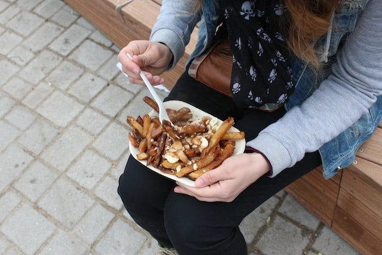

Poutine recipe

Learn how to make easy and authentic Poutine
Ingredients
- 1 quart of vegetable oil frying
-
canned beef gravy
- 5 medium potatoes, cut into fries
- 2 cups of cheese curds
instructions
- Heat oil in a deep fryer to 185 degrees c.
- While the oil is heating, begin to warm gravy
- Place fries into oil, and cook until light brown.
- Place fries on a serving platter, sprinkle cheese over them
- Pour hot gravy evenly around the fries and cheese then enjoy